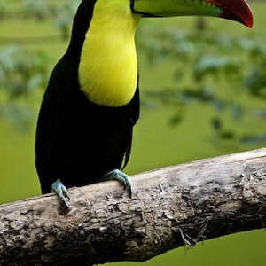
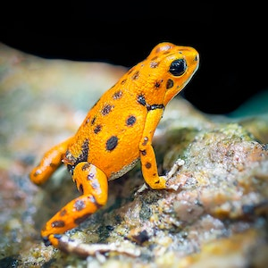

Wildlife Conservation and Its Importance
Wildlife Conservation can be defined as preventing wildlife from uneven killing and poaching. It also involves the practice of making people aware by telling them about the importance of wildlife. Wi+ldlife Conservation is very important to maintain the food chain and ecosystem balance. If all the tigers get hunted for skins, then the count of deers increases drastically. Along with this, if humans kill all the hens for meat, then there would be no source of eggs. So, Wildlife conservation is necessary to maintain the population of animals on Earth to maintain their role in the ecosystem and food chain.
Gallery

